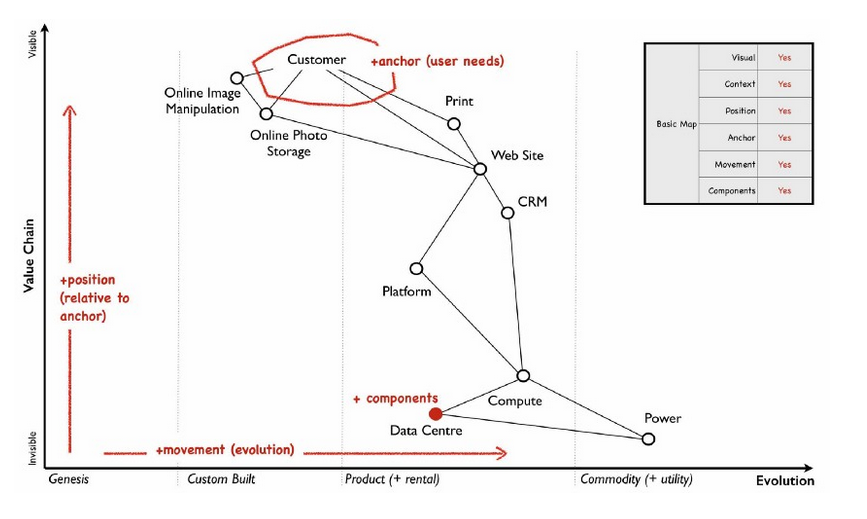
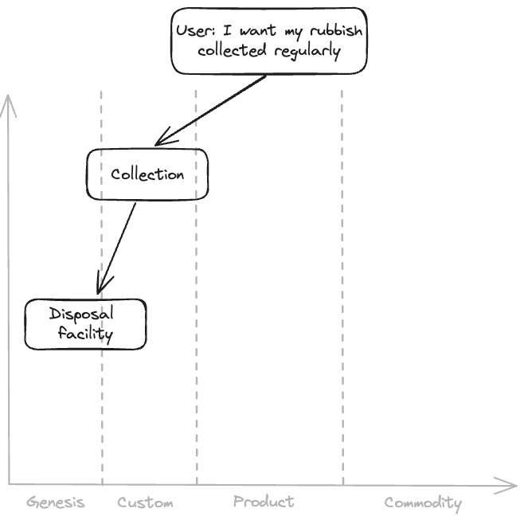
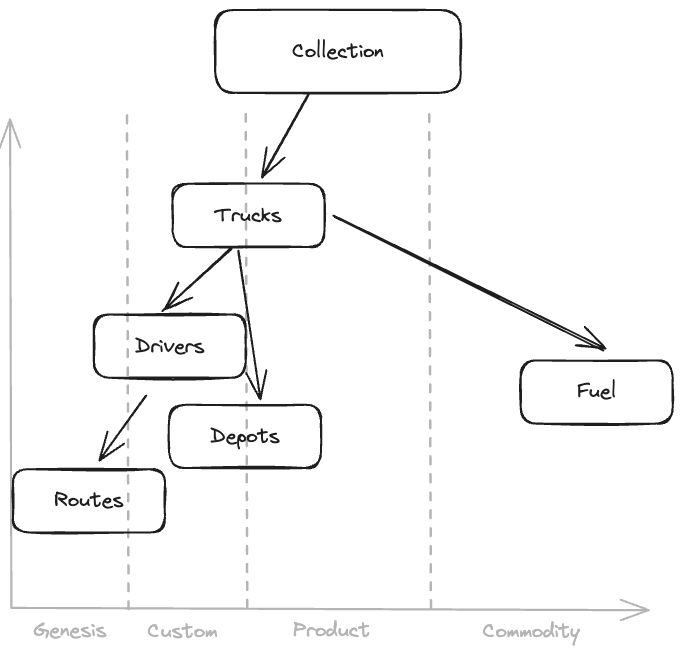

Wardley maps in urban planning
Well over a decade ago, I heard Shaun Hendy’s maxim that most problems can be broken down to network representations. Galvanised by this perspective, I gained the basic understanding and adapted it in domains as disparate as identifying peer review communities, store location analysis, walkability of cities, container shipping routes and maritime resilience. It didn’t end there. When your mind has opened to network representations you see them everywhere. Even in the unlikely domain of business strategy Wardley maps.
A Wardley map anchors a user story (i.e. what a user needs) and draws out the dependency chain of capabilities required to service that need. Capabilities are first mapped along the dimensions of value (y axis) to the customer, proxied by visibility to the customer - the more visible the capability the higher value it is. Once the value is mapped, capabilities are then moved along the x-axis of maturity / evolution with the standardisation (commodification) being the most evolved state.

Treating the Wardley map as a “graph” (i.e. a network), metrics like degree centrality bring to prominence visually buried components like “Compute”. Though the component is low down in the value chain relative to the customer, company strategy should aim to evolve this capability into commodification.
Simon Wardley likens these eponymous maps to strategic maps used in military operations [2]. Components can be moved around like pawns with little personal attachment. The map centres the discussion as well as critique making it a neutral tableau for challenging value and evolution. This quality makes the Wardley map a contender in the contentious world of urban planning and evaluation - especially of municipal services.
Let’s take a user story where a citizen wants their rubbish collected regularly. Simplistically, all the municipality needs to do is collect and transport the rubbish to a disposal facility. But of course, nothing is simple. Disposal is complex and contentious according Franklin-Wallis’s recent book Wasteland, which cracks open these dirty stories in candid prose [3]. Collection is equally challenging. While collection and transport make up 90% of waste expenditure, inequities in collection and transport of solid waste result in poor service in the neediest areas [4]. So, how could a hypothetical council strategy group work through the issues? They could reframe the simple linear process into a Wardley map.

In developing countries, disposal facilities and even collection are in a nascent phase. Looking further into collection in its own Wardley map might show that only one aspect is standardised. Only fuel is available as a commodity. All other components from routes to drivers, trucks and depots are nascent technology or custom-designed (more on evolution of products and services in [5]). At this point the strategic conversations can start.
Why are the trucks custom built? - Many of our roads are too narrow for standard specification rubbish trucks from Europe so we have to custom modify a particular type of truck made locally.
Can the company making the local trucks be commissioned to build a fleet of rubbish trucks for us so there are no additional modifications we need to arrange? - Yes, probably.
Why are drivers not generic? They need a lot of training to use the custom trucks and spend a lot of time learning the routes.
Why are we not using routing software? Data quality is poor for off-the-shelf products so drivers just have to learn on the job.

These conversations are completely made up but they highlight the value of the Wardley map as a tableau - facilitating discussion around deep and ingrained inefficiencies that prevent the customer getting a reasonable level of service. Over time these discussions can coalesce into focal points for a strategy. For example, a strategy to improve the roading and building quality. Better road data helps drivers perform their core job with routing software rather than learning complex routes over several months. Better building data can be used to understand demand e.g. higher rise buildings will have greater demand as there are more people who are affluent and thus generate more rubbish per capita.
References
Credits
- Post photo from Wardley mapping - the book [1].